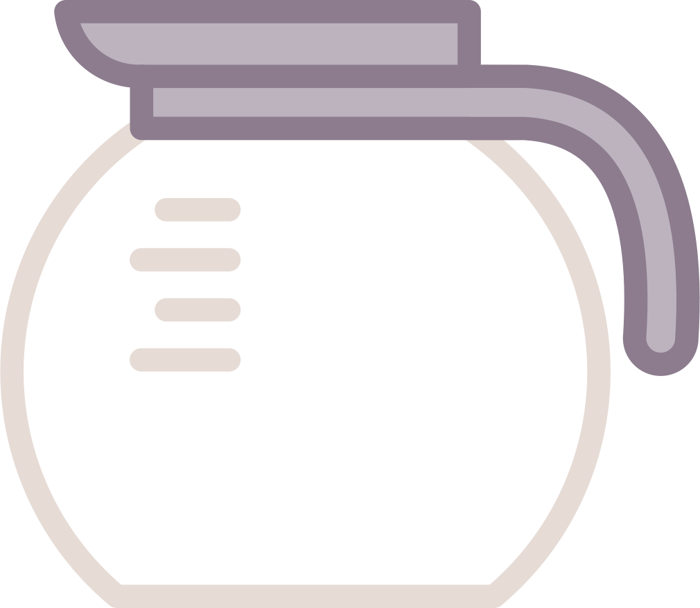

<!DOCTYPE html>
<html lang="en">
<head>
    <meta charset="UTF-8">
    <meta name="viewport" content="width=device-width, initial-scale=1.0">
    <link rel="stylesheet" href="css/style.css">
    <title>Чайник</title>
</head>
<body>

<div id="root"></div>

<script src="https://unpkg.com/react@17/umd/react.development.js"></script>
<script src="https://unpkg.com/react-dom@17/umd/react-dom.development.js"></script>
<script src="https://unpkg.com/babel-standalone@6.26.0/babel.min.js"></script>
<script type="text/babel">
    // Массив чайников
    const kettles = [{
        id: 1,
        name: 'Vitek VT-1155',
        timeForBoiling: 10
    }, {
        id: 2,
        name: 'Vitek VT-2000',
        timeForBoiling: 6
    }]

    const defaultKettleState = {
        power: false,
        waterLevel: 0,
        temperature: 20,
        logs: []
    }
    const audioPath = './assets/svist-chajnika.mp3'

    const getMargin = (currentWaterLevel) => {
        if (currentWaterLevel == 1) {
            return -10;
        } else {
            if (currentWaterLevel > 0 && currentWaterLevel <= 0.3) {
                return 78 - currentWaterLevel * 100
            } else {
                if (currentWaterLevel >= 0.3 && currentWaterLevel <= 0.9) {
                    return 88 - currentWaterLevel * 100
                } else {
                    return 100
                }
            }
        }

    }

    const MyComponent = () => {
        // звук закипания чайника)
        const [audioElement] = React.useState(new Audio(audioPath))
        // Стэйт выбранного чайника из селекта
        const [currentKettle, setCurrentKettle] = React.useState(kettles[0]);
        // Стэйт введенного количества воды
        const [currentWaterLevel, setCurrentWaterLevel] = React.useState(0);
        // Стэйт включения чайника
        const [isTurnedOn, setIsTurnedOn] = React.useState(false);
        // Стэйт экземпляра чайника
        const [exKettle, setExKettle] = React.useState(null)
        // Стейт для реагирования рект приложения на изменения данных в экземпляре класса Kettle.
        const [kettleState, setKettleState] = React.useState(defaultKettleState);

        // Метод выбора чайника
        const changeKettle = (e) => {
            const newKettle = kettles.find(k => k.name === e.target.value);

            setCurrentKettle(newKettle)
        }

        // Включение чайника
        const turnOn = () => {
            setIsTurnedOn(true);
            exKettle.turnOn(currentWaterLevel)
        }

        // Выключение чайника
        const turnOff = () => {
            setIsTurnedOn(false);
            exKettle.turnOff()
        }

        // Изменение инпута количиства воды
        const handleChange = (event) => {
            if (event.nativeEvent.inputType) {
                return
            }
            let inputValue = event.target.value;

            setCurrentWaterLevel(inputValue);
            setKettleState((prev) => ({...prev, waterLevel: inputValue}));
        };

        // Деструктуризация переменных
        const {power, temperature} = kettleState;

        // Жизненый цикл для инициализации нового экзепляра чайника.
        // Данная реализация необходима в таком виде, чтобы мы смогли передать новый метод изменения данных стейта.
        React.useEffect(() => {
            setExKettle(new ElectricKettle(currentKettle, setKettleState))
        }, [currentKettle])

        // Жизненый цикл для управления аудио
        React.useEffect(() => {
            if (temperature >= 60) {
                audioElement.play();
                audioElement.volume = 0.8;
            } else {
                audioElement.pause()
                audioElement.currentTime = 0;
            }
        }, [temperature])

        // расчет уровня воды в чайнике для анимации
        const marginTop = getMargin(currentWaterLevel)

        return (
            <div className="content">
                <div className="content__image-wrapper">
                    <div className="content__bowl bowl">
                        <div className="bowl__inner inner">
                            <div
                                className={`bowl__fill fill ${currentWaterLevel > 0 ? 'active' : ''}`}
                                style={{marginTop: `${marginTop}%`}}
                            >
                                
                            </div>
                        </div>
                    </div>
                    <div className="content__image">
                        
                    </div>
                </div>
                <div className="content__info info">
                    <select
                        className="info__select"
                        name="Kettles"
                        id="kettles"
                        onChange={changeKettle}
                    >
                        {kettles.map((i) => (
                            <option key={i.id} value={i.name}>
                                {i.name} Время закипания {`${i.timeForBoiling}`}
                            </option>
                        ))}
                    </select>
                    <h1 className="info__title">Состояние чайника: {currentKettle.name}</h1>
                    <div className="info__items">
                        <div className="info__item">Включен: <input type="checkbox" readOnly checked={power}/></div>
                        <div className="info__item">Время закипания: {`${currentKettle.timeForBoiling} сек.`}</div>
                        <div className="info__item">
                            Количество воды:
                            <input
                                type="number"
                                step="0.1"
                                min="0"
                                max="1"
                                title="Введите значение от 0 до 1 с точностью до одного десятичного знака."
                                disabled={power}
                                value={currentWaterLevel}
                                onChange={handleChange}
                            />
                        </div>
                        <div className="info__item">Температура: {`${temperature.toFixed(0)} °C`}</div>
                    </div>
                    {!power && <button className={`info__action on `} onClick={turnOn}>on</button>}
                    {power && <button className={`info__action off `} onClick={turnOff}>off</button>}
                </div>
                {isTurnedOn && (
                    <div className={`info__logs active`}>{kettleState.logs.map((l) => <div>{l}</div>)}</div>
                )}
            </div>
        );
    }

    // Класс электричекого чайника
    class ElectricKettle {
        constructor(currentKettle, setter) {
            this.power = false;
            this.waterLevel = 0;
            this.temperature = 20;
            this.timeForBoiling = currentKettle.timeForBoiling || 0;
            this.boilWaterInterval = null

            this.setter = setter
        }

        // Метод включения
        turnOn(waterLevel) {
            this.power = true;

            this.waterLevel = waterLevel;
            this.setter(prev => ({
                ...prev,
                power: true,
                logs: []
            }))

            this.boilWater();
        }

        // Метод выключения
        turnOff() {
            this.power = false;
            this.temperature = 20;
            this.waterLevel = 0;
            this.setter(prev => ({
                ...prev,
                power: false,
                temperature: 20,
                waterLevel: 0,
                logs: [...prev.logs, 'Чайник выключен']
            }))
            clearInterval(this.boilWaterInterval);
        }

        // Метод кипячения
        boilWater() {
            this.setter(prev => ({
                ...prev,
                logs: [...prev.logs, 'Вскрытие...']
            }))
            // условие, если уровень воды на нуле, то вскипятить чайник нельзя и срабатывает метод выключения
            if (Number(this.waterLevel) === Number(0)) {
                this.setter(prev => ({
                    ...prev,
                    logs: [...prev.logs, 'Нет воды']
                }))
                this.turnOff()
                return
            } else {
                this.setter(prev => ({
                    ...prev,
                    logs: [...prev.logs, 'Наливаем воду...', 'Закрываем чайник...']
                }))

            }
            this.boilWaterInterval = setInterval(() => {

                if (this.power) {
                    // расчет скорости закипания, которая зависит от количества налитой воды и время кипечения на 1 литр
                    const currentTemp = this.temperature + (80 / (this.waterLevel * this.timeForBoiling))
                    this.temperature = currentTemp;
                    this.setter(prev => ({
                        ...prev,
                        temperature: currentTemp,
                        logs: [...prev.logs, `Температура в чайнике: ${currentTemp.toFixed(0)}°C`]
                    }))

                    if (this.temperature >= 100) {
                        this.setter(prev => ({
                            ...prev,
                            logs: [...prev.logs, 'Вода вскипела']
                        }))

                        this.turnOff();
                    }
                } else {
                    clearInterval(this.boilWaterInterval);
                }
            }, 1000);
        }
    }

    ReactDOM.render(<MyComponent/>, document.getElementById('root'));
</script>
</body>
</html>
